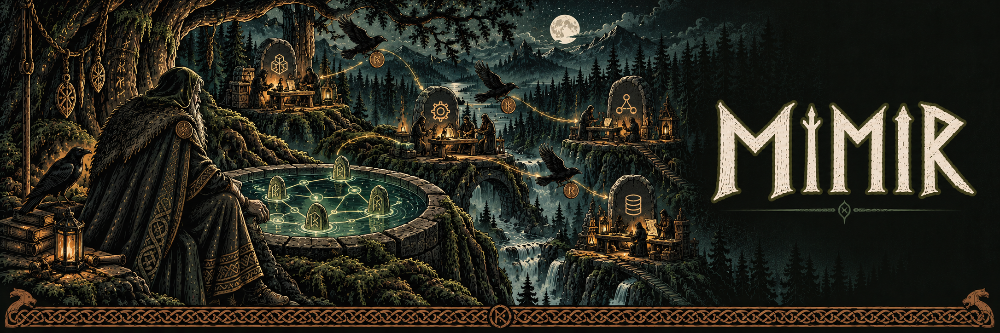

Coordinate crews
Schedule dependent tasks, lease work to agents and give each task its own Git worktree.

v0.1.0 · Experimental source release
Crews, scheduling, execution controls and durable event history.
Schedule dependent tasks, lease work to agents and give each task its own Git worktree.
Use local CLI agents or configured SSH workers. Keep agent credentials and runtime selection under your control.
Follow durable events, approvals, artifacts and verification results. A vanished session is reported as blocked, not silently completed.
Mimir owns missions, crews, execution and runtime observations. Sindri can submit approved plans; Brokkr supplies verification; Heimdall presents the operator controls.
Node.js 25 or newer, pnpm 12 and Git.
Clone Mimir and run these commands from its root directory.
pnpm install --frozen-lockfile
pnpm build
node apps/cli/dist/main.js init
node apps/cli/dist/main.js doctor
node apps/server/dist/main.jsRead the full project guide for configuration and service connections.
What we have verified
427 server tests passed on October 18, including local sockets and tmux. The wider October 17 factory run passed 5,151 tests across 34 package suites.
Explore the tools, setup guides and release notes on each project site.